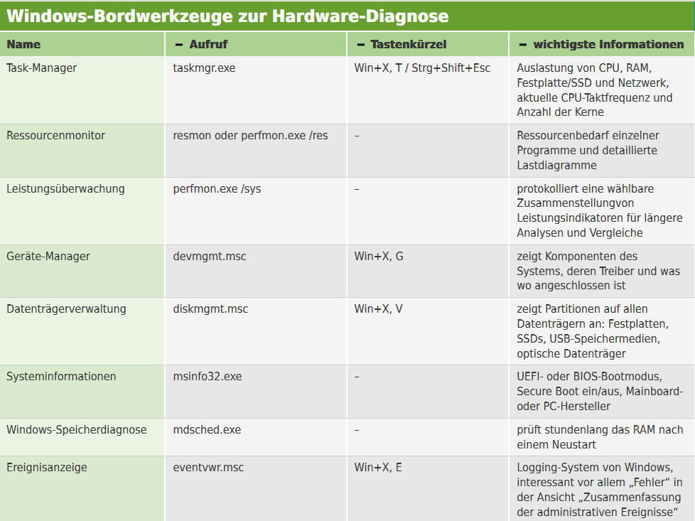

Jarltech-FAQ
Fachbereich 3
Colormetrics Mainboard tauschen
Beim Tausch bitte darauf achten, dass die S/N vom Mainboard auch mit der im BIOS hinterlegten S/N übereinstimmt.
Touch Typen
Resistiver Touch:
- + Resistent gegen Schmutz und Flüssigkeiten.
- + Funktioniert mit jedem Gegenstand, mit dem man Druck auf das Display ausüben kann.
- - Bei rauer Nutzung entstehen Abnutzungen, welche die Verlässlichkeit beeinträchtigt.
PCAP:
- + Multitouch / Touchgesten möglich.
- + Sehr präzise.
- - Feuchtigkeit und Dreck können den Touch beeinträchtigen.
- - Ein PCAP geeignetes Eingabegerät wird benötigt.
Infrarot:
- - Bei starkem Lichteinfall wird der Touch beeinflusst.
- - Gibt es nicht rahmenlos.
Kameras:
- - Unpräzise
- - In dunkleren Umgebungen kann es zu Eingabefehlern kommen.
- - Gibt es nicht rahmenlos.
Hardwarediagnose
